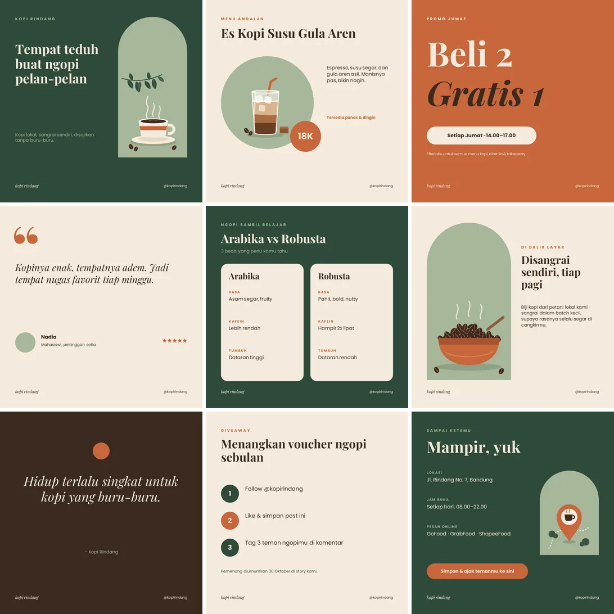

Bikinin Studio · 18 Oktober 2026 · 4 menit baca
3 Kesalahan Feed Jualan yang Membuat Calon Pembeli Ragu
Teks terlalu padat, warna yang berganti-ganti, dan harga yang tidak dicantumkan: tiga kesalahan feed Instagram usaha yang paling sering, beserta cara memperbaikinya tanpa harus mahir desain.

Calon pembeli biasanya hanya membutuhkan beberapa detik untuk memutuskan apakah akan melihat lebih lanjut atau berpindah ke akun lain. Dalam waktu sesingkat itu, yang dinilai bukan kualitas produk, melainkan tampilan feed. Berikut tiga kesalahan yang paling sering kami temui di akun usaha, beserta cara memperbaikinya.
1. Teks terlalu padat
Satu gambar memuat nama produk, deskripsi, harga, alamat, jam buka, promo, dan ajakan mengikuti akun. Akibatnya, tidak ada satu pun yang terbaca.
- Satu unggahan, satu pesan. Unggahan menu cukup berisi nama menu dan harga. Unggahan promo cukup berisi promonya.
- Informasi lengkap (alamat, jam buka, cara pemesanan) letakkan di caption atau highlight.
- Uji sederhana: perkecil gambar hingga seukuran ibu jari. Jika teks utamanya masih terbaca, desain sudah aman.
2. Warna dan huruf berganti-ganti
Hari ini merah-kuning, besok biru-ungu, lusa memakai template lain. Dilihat dari halaman profil, feed tampak seperti milik lima usaha yang berbeda.
- Pilih 2–3 warna utama, misalnya satu warna gelap, satu warna terang, dan satu warna aksen.
- Gunakan 1–2 jenis huruf: satu untuk judul dan satu untuk teks biasa.
- Catat pilihan tersebut (kode warna dan nama huruf), lalu gunakan secara konsisten setiap kali membuat unggahan.
Contohnya feed Kopi Rindang (proyek konsep kami): hanya hijau tua, terakota, dan krem, dengan dua jenis huruf. Dari halaman profil langsung terlihat sebagai satu merek.
3. Harga dan cara pemesanan tidak dicantumkan
Kesalahan ini paling merugikan. Banyak calon pembeli enggan bertanya harga, terlebih bila khawatir harganya mahal. Mereka memilih melewatinya.
- Cantumkan harga di unggahan produk. Jika harganya bervariasi, tulis "mulai dari".
- Jelaskan cara pemesanan dengan jelas: WhatsApp, layanan pesan antar, atau tautan di bio.
- Pastikan tautan di bio langsung mengarah ke WhatsApp, katalog, atau halaman yang memiliki tombol pemesanan.
Mulai dari unggahan berikutnya
Feed yang efektif tidak harus mewah. Cukup jelas (satu pesan per unggahan), konsisten (warna dan huruf yang sama), dan mudah dibeli (ada harga dan cara pemesanan). Feed lama tidak perlu dihapus; terapkan saja pada unggahan selanjutnya.
Ingin feed dirancang secara profesional? Desain konten mulai Rp 15rb.
Lihat desain konten media sosial Konsultasi via WhatsAppBaca juga: Cara Menyusun PPT Sidang yang Rapi dan Mudah Diikuti · Landing Page atau Cukup Instagram: Kapan Usaha Membutuhkan Website?